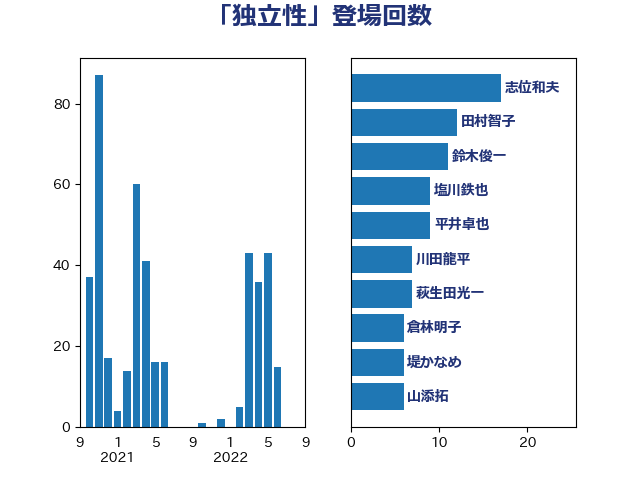

単語「独立性」

| 志位和夫 | 日本共産党 | 17 回 |
| 田村智子 | 日本共産党 | 12 回 |
| 鈴木俊一 | 自由民主党 | 11 回 |
| 塩川鉄也 | 日本共産党 | 9 回 |
| 平井卓也 | 自由民主党 | 9 回 |
| 川田龍平 | 立憲民主党 | 7 回 |
| 萩生田光一 | 自由民主党 | 7 回 |
| 倉林明子 | 日本共産党 | 6 回 |
| 堤かなめ | 立憲民主党 | 6 回 |
| 山添拓 | 日本共産党 | 6 回 |
| 早稲田ゆき | 立憲民主党 | 6 回 |
| 梶山弘志 | 自由民主党 | 6 回 |
| 菅義偉 | 自由民主党 | 6 回 |
| 城井崇 | 立憲民主党 | 5 回 |
| 後藤茂之 | 自由民主党 | 5 回 |
| 若松謙維 | 公明党 | 5 回 |
| 落合貴之 | 立憲民主党 | 5 回 |
| 加藤勝信 | 自由民主党 | 4 回 |
| 小池晃 | 日本共産党 | 4 回 |
| 小泉進次郎 | 自由民主党 | 4 回 |
| 山口壯 | 自由民主党 | 4 回 |
| 岸真紀子 | 立憲民主党 | 4 回 |
| 牧山ひろえ | 立憲民主党 | 4 回 |
| 福島みずほ | 社会民主党 | 4 回 |
| 笠井亮 | 日本共産党 | 4 回 |
| 野田佳彦 | 立憲民主党 | 4 回 |
| 古賀之士 | 立憲民主党 | 3 回 |
| 小沢雅仁 | 立憲民主党 | 3 回 |
| 枝野幸男 | 立憲民主党 | 3 回 |
| 沢田良 | 日本維新の会 | 3 回 |
| 福山哲郎 | 立憲民主党 | 3 回 |
| 野上浩太郎 | 自由民主党 | 3 回 |
| 麻生太郎 | 自由民主党 | 3 回 |
| 伊藤孝江 | 公明党 | 2 回 |
| 吉川沙織 | 立憲民主党 | 2 回 |
| 吉田忠智 | 立憲民主党 | 2 回 |
| 奥下剛光 | 日本維新の会 | 2 回 |
| 宮本徹 | 日本共産党 | 2 回 |
| 小西洋之 | 立憲民主党 | 2 回 |
| 森山浩行 | 立憲民主党 | 2 回 |
| 武田良太 | 自由民主党 | 2 回 |
| 田村まみ | 国民民主党 | 2 回 |
| 田村憲久 | 自由民主党 | 2 回 |
| 石井苗子 | 日本維新の会 | 2 回 |
| 足立康史 | 日本維新の会 | 2 回 |
| 辻元清美 | 立憲民主党 | 2 回 |
| 野間健 | 立憲民主党 | 2 回 |
| 鈴木庸介 | 立憲民主党 | 2 回 |
| 長妻昭 | 立憲民主党 | 2 回 |
| 高良鉄美 | 無所属 | 2 回 |
| 三ッ林裕巳 | 自由民主党 | 1 回 |
| 下野六太 | 公明党 | 1 回 |
| 中司宏 | 日本維新の会 | 1 回 |
| 中山展宏 | 自由民主党 | 1 回 |
| 中野洋昌 | 公明党 | 1 回 |
| 伊佐進一 | 公明党 | 1 回 |
| 伊藤俊輔 | 立憲民主党 | 1 回 |
| 佐々木紀 | 自由民主党 | 1 回 |
| 務台俊介 | 自由民主党 | 1 回 |
| 古川禎久 | 自由民主党 | 1 回 |
| 吉川赳 | 無所属 | 1 回 |
| 嘉田由紀子 | 無所属 | 1 回 |
| 大岡敏孝 | 自由民主党 | 1 回 |
| 守島正 | 日本維新の会 | 1 回 |
| 安江伸夫 | 公明党 | 1 回 |
| 宮本岳志 | 日本共産党 | 1 回 |
| 寺田静 | 無所属 | 1 回 |
| 小田原潔 | 自由民主党 | 1 回 |
| 山下芳生 | 日本共産党 | 1 回 |
| 岡本あき子 | 立憲民主党 | 1 回 |
| 岸田文雄 | 自由民主党 | 1 回 |
| 川合孝典 | 国民民主党 | 1 回 |
| 平将明 | 自由民主党 | 1 回 |
| 斎藤嘉隆 | 立憲民主党 | 1 回 |
| 末松信介 | 自由民主党 | 1 回 |
| 本村伸子 | 日本共産党 | 1 回 |
| 杉久武 | 公明党 | 1 回 |
| 杉尾秀哉 | 立憲民主党 | 1 回 |
| 柚木道義 | 立憲民主党 | 1 回 |
| 柳ヶ瀬裕文 | 日本維新の会 | 1 回 |
| 橋本岳 | 自由民主党 | 1 回 |
| 櫻井周 | 立憲民主党 | 1 回 |
| 水岡俊一 | 立憲民主党 | 1 回 |
| 池下卓 | 日本維新の会 | 1 回 |
| 浅田均 | 日本維新の会 | 1 回 |
| 浅野哲 | 国民民主党 | 1 回 |
| 清水貴之 | 日本維新の会 | 1 回 |
| 熊谷裕人 | 立憲民主党 | 1 回 |
| 田嶋要 | 立憲民主党 | 1 回 |
| 石井章 | 日本維新の会 | 1 回 |
| 石川大我 | 立憲民主党 | 1 回 |
| 米山隆一 | 立憲民主党 | 1 回 |
| 細田健一 | 自由民主党 | 1 回 |
| 近藤昭一 | 立憲民主党 | 1 回 |
| 野田国義 | 立憲民主党 | 1 回 |
| 鈴木淳司 | 自由民主党 | 1 回 |
| 音喜多駿 | 日本維新の会 | 1 回 |